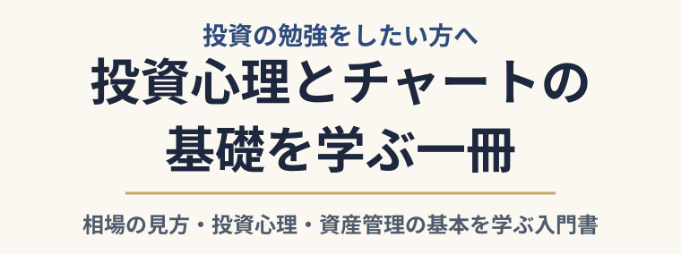
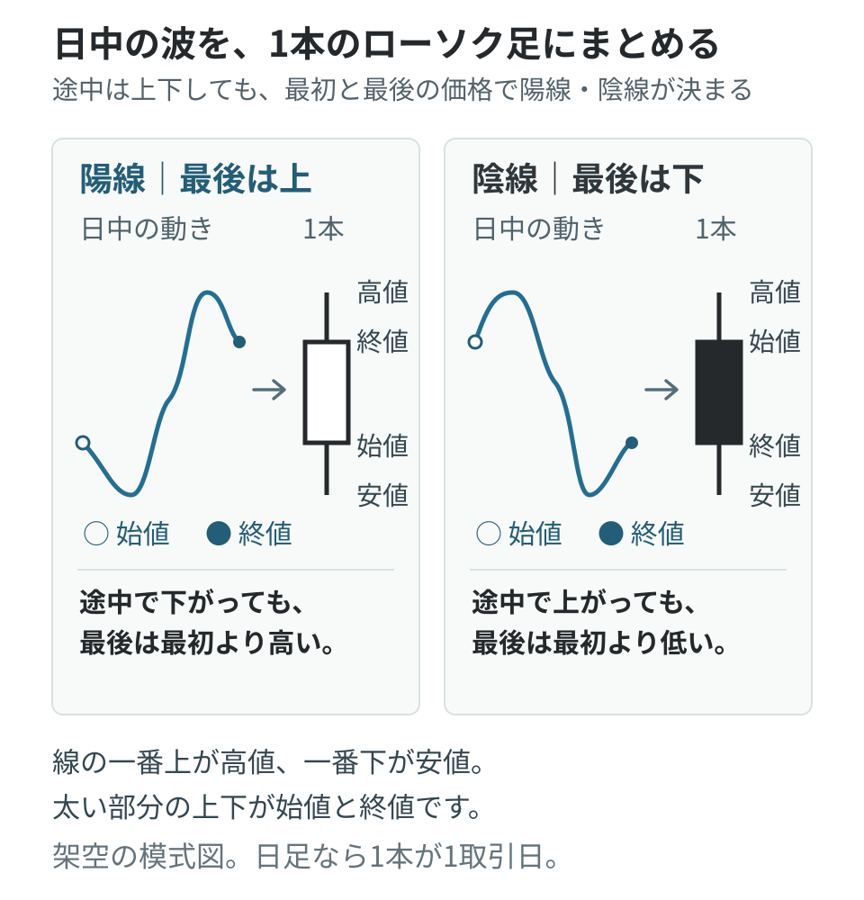
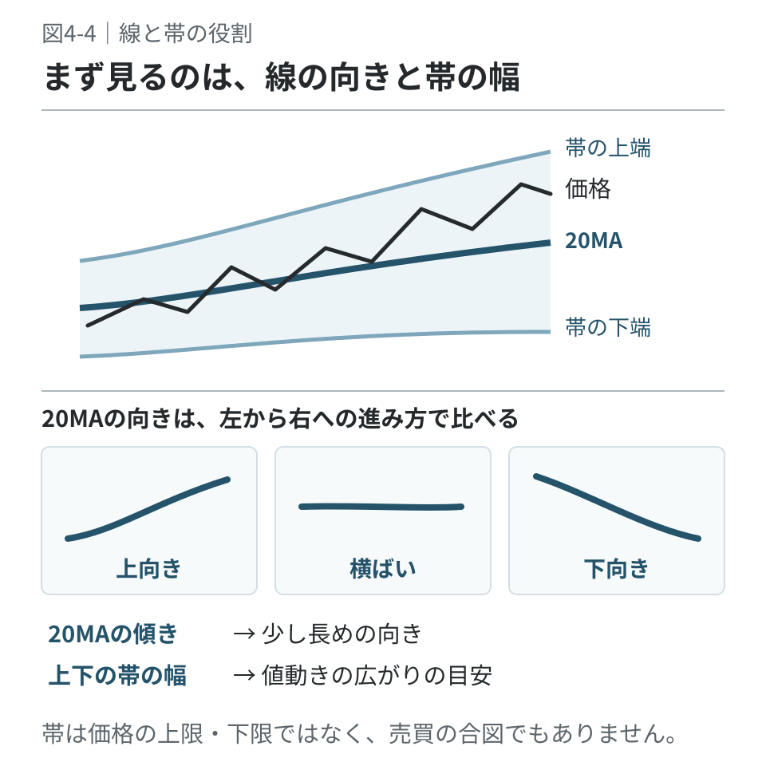
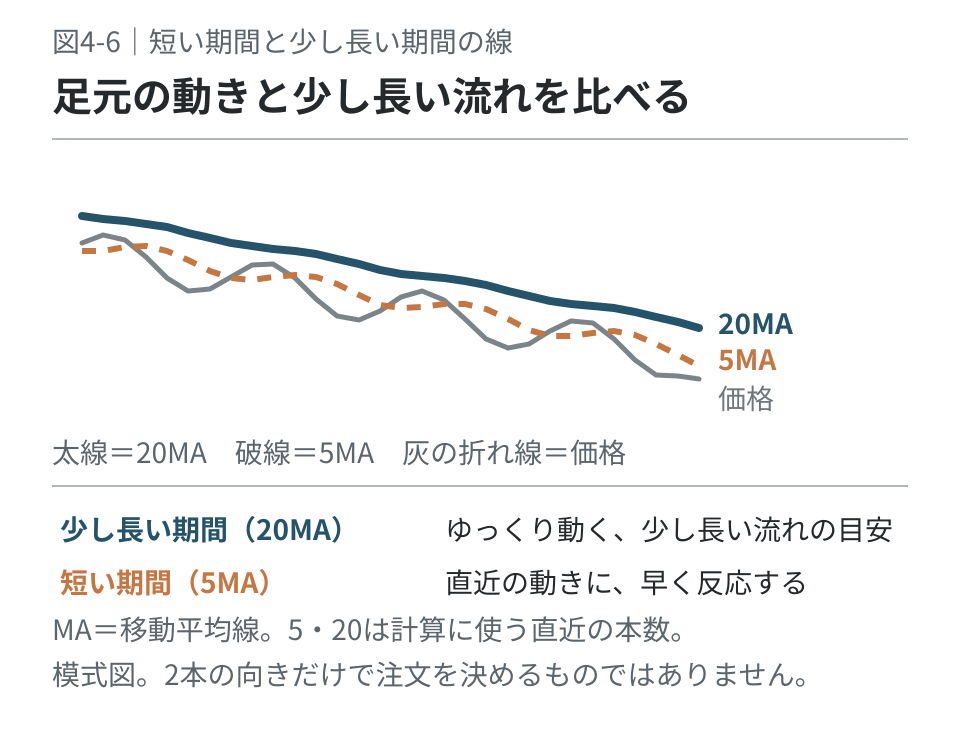

01
送料込み 税込550円でお届けします
書籍『10ミニッツ投資メソッド』（リード出版）は、送料込み 税込550円です。お支払い方法はクレジットカード払いとなります。
ご購入（決済完了）から3営業日以内に発送いたします。なお、沖縄・離島などの一部地域はお届けが遅れる場合があります。

BOOK ORDER
奥澤智宏著『10ミニッツ投資メソッド』（リード出版）をお届けします。決済完了から3営業日以内に発送いたします。
ABOUT THIS BOOK
投資の勉強をしたい方に向け、相場の見方と投資心理、日々の判断を記録する手順をまとめた書籍です。
読者を経験年数で限るものではなく、基礎から順に整理したい方に向けた構成になっています。
書名の「10ミニッツ」は、朝の10分を目安に日足チャートを確かめ、見たことを一行で記録する考え方を指します（取引のすべてが10分で終わるという意味ではありません）。
本書では、企業の事業や業績を調べるファンダメンタルズ分析と、取引された価格の動きを見るテクニカル分析の役割の違いを説明しています。
チャートについては、日足やローソク足、移動平均線、ボリンジャーバンドの基本的な読み方を、模式図を使って順を追って解説しています。
さらに、注文の前に確認しておく項目と取引数量の考え方、生活リズムに合う時間幅の選び方、デモ取引での練習方法、巻末の記入シートと用語集までを一冊に収録しています。
CHAPTERS
値動きに触れたときに起きやすい三つの行動パターンを取り上げ、相場で起きた事実と自分の気持ちを分けて確認する視点を解説します。判断の前に立ち止まって確認するための三つの問いを紹介します。
値動きに反応しやすい五つの場面を一覧で整理し、知る・試す・言葉にする・見直すという学習の順番を解説します。毎日、先に決めたこと・いま感じたこと・今日選ぶ行動を一行ずつ書き出す判断メモを紹介します。
気持ちが動いた場面と言葉を分けて書く記入ワークと、あらかじめ決めた基準へ戻る手順を説明します。あわせて、ファンダメンタルズ分析とテクニカル分析の違い、価格の記録であるチャートを見る理由を解説します。
月足・週足・日足という時間幅の違いから始め、ローソク足、20本移動平均線（20MA）、5本移動平均線（5MA）、ボリンジャーバンドの基本的な見方を、模式図を使って解説します。
注文の前に確認しておく項目、取引数量を仮の数値で計算する手順、複数を保有するときの全体の確認方法を解説します。取引の前後に判断と結果を分けて記録する考え方も取り上げます。
スキャルピング・デイトレード・スイングトレードといった時間幅の違いを整理し、生活リズムやチャートを見る時間帯に合わせた選択の考え方を解説します。デモ取引や紙上での模擬検証の手順と注意点も紹介しています。
EXCERPT
本書では、相場の値動きやニュースに触れたときに、見た事実と自分の気持ちを分けて整理するための問いと記入欄を掲載しています。
第2章（2-3）では、毎日落ち着ける時間に次の三つの項目を一行ずつ書き出し、あらかじめ決めた予定と当日の行動を照らし合わせる「毎日の判断メモ」を紹介しています。
※上記は第2章（2-3）に掲載している記入項目の紹介です。本書には記入例（図2-3）と巻末の記入シートを収録しています。
CONTENTS
本書に収録している解説項目と付録の中から、主な9つのテーマをご紹介します。
月足・週足・日足による時間幅の違い
日足とローソク足の基本的な読み方
20MAとボリンジャーバンドの役割
5MAと20MAの比べ方
注文前の確認項目と数量の計算手順
取引前後の判断メモと記録の付け方
生活に合う時間幅の比較と選び方
デモ取引と紙上での模擬検証の手順
本文で使う用語をまとめた用語集
『10ミニッツ投資メソッド』
書籍『10ミニッツ投資メソッド』（リード出版）は、送料込み 税込550円です。お支払い方法はクレジットカード払いとなります。
ご購入（決済完了）から3営業日以内に発送いたします。なお、沖縄・離島などの一部地域はお届けが遅れる場合があります。
文章だけでは把握しにくいチャートの見方を視覚的に整理するため、本書では多数の模式図を掲載しています。
第4章の「図4-2」では、1日の値動きを1本のローソク足にまとめる仕組みと、始値・終値・高値・安値の位置、陽線と陰線の見分け方を図示しています。
用語を一つずつ確かめながら、チャートの基本を順に解説する構成です。

「図4-4」では、20本移動平均線（20MA）の向きの比べ方と、ボリンジャーバンドの帯の幅が示す値動きの広がりを、上向き・横ばい・下向きの例で図示しています。
巻末の付録には、取引前の判断メモ、取引後の記録、1週間の振り返りという3種類の記入シートと用語集も収録しています。

「図4-6」では、直近の動きに早く反応する5本移動平均線（5MA）と、ゆっくり動いて少し長い流れの目安になる20本移動平均線（20MA）を、同じ価格の動きに重ねて図示しています。
線の名前と役割を、図と本文の説明で一つずつ解説しています。

ORDER
相場の見方、投資心理の整理、資産管理の基本、巻末の記入シートと用語集を一冊にまとめた『10ミニッツ投資メソッド』（リード出版）を、送料込み 税込550円でお届けします。
お支払い方法はクレジットカード払いで、決済完了から3営業日以内に発送いたします。
ボタンを押すと、ページ上部のお届け先の入力欄へ移動します。
QUESTIONS
はい。第4章では、月足・週足・日足といった時間幅の違いや、ローソク足の始値・終値・高値・安値の見方から図解で解説しています。巻末には本文で使う用語をまとめた用語集も収録しており、本文と用語集を合わせて読む構成です。
ご購入（決済完了）から3営業日以内に発送いたします。沖縄・離島などの一部地域や配送状況によっては、到着が遅れる場合があります。
いいえ。本書で紹介する「10ミニッツ」は、あらかじめ選んだ対象を朝の10分を目安に日足チャートで確認し、見たことを一行でメモする考え方です。学習や振り返り、資産管理の計算、注文の準備までを10分で終える意味ではありません。
価格は送料込み 税込550円です。お支払い方法はクレジットカード払いとなります。
はい。「投資3年目に学びたい」という言葉は読者を経験年数で限定するものではありません。これから投資の勉強を始める方から経験のある方まで、相場の見方と判断の記録方法の基礎を順に解説する構成です。
ABOUT THE SCHOOL
著者の奥澤智宏が代表講師を務める「どさんこ投資スクール」では、相場の見方や資産管理の基本に加え、過去のチャートを使って判断の理由を言葉にする練習や、投資心理との向き合い方をお伝えしています。
相場の見方と投資心理を、基礎から学ぶ。
INSTRUCTOR
どさんこ投資スクール 代表講師／投資心理カウンセラー
THE BOOK
チャートの基本的な見方、投資心理の整理、資産管理の基本、巻末の記入シートと用語集を一冊にまとめました。投資の学習用の一冊として、ぜひお手元でご覧ください。